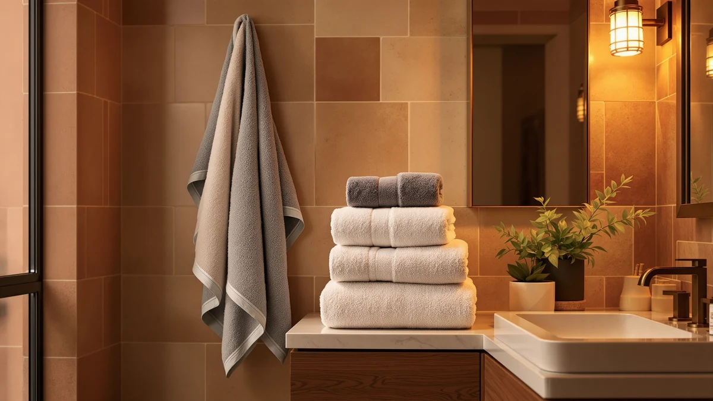

Towel Materials Explained (2026)
Prices and picks verified as of August 2026. Independent, reader-supported reviews.


Things to Know Before You Buy
- Cotton, especially Turkish and Egyptian cotton, absorbs more water than microfiber but takes longer to dry.
- Microfiber dries in under an hour and packs light, though it can feel less plush against skin.
- GSM (grams per square meter) measures weight, not quality. A 600 GSM towel is not automatically better than a 400 GSM one.
- Bamboo rayon and linen blends resist odor and mildew better than plain cotton in humid bathrooms.
- Fabric softener and high heat damage towel fibers no matter which material you own.
Towel materials explained simply: cotton, microfiber, bamboo rayon, and linen absorb water, dry out, and hold up to washing in different ways. The material matters more than thread count or brand name ever will, and picking the wrong one for your bathroom wastes money for years.
Most shoppers pick a towel by color or price, then discover the mismatch only after a few washes, when a plush-looking towel goes flat or a lightweight one takes an hour to dry on the rack.
This guide breaks down what each major towel material does well, where it falls short, and how to match one to your climate, skin, and laundry habits.
What You Need to Know
Every towel starts as loops of yarn woven or knitted into a base fabric, and the fiber those loops are made from decides most of what you feel day to day. Cotton is the industry default because its fibers are naturally absorbent, hollow enough to trap air and hold water, and durable enough to survive hundreds of wash cycles. Within cotton, fiber staple length changes performance: short-staple cotton sheds lint and wears thin fast, while long-staple varieties like Turkish and Egyptian cotton spin into smoother, stronger yarn that holds up for years.
Microfiber works on a different principle. Manufacturers split polyester and polyamide strands into filaments finer than a human hair, creating a surface area that wicks moisture rather than absorbing it into the fiber itself. That is why a microfiber towel feels dry to the touch minutes after you use it, even though it moved as much water as a cotton towel would.
Bamboo rayon and linen sit in between. Bamboo rayon, made by dissolving bamboo pulp into fiber, absorbs well and resists bacteria naturally, though it needs gentler washing than cotton. Linen, woven from flax, dries fast and softens with every wash, but it costs more and looks less plush on a towel bar. Once you understand towel materials explained at the fiber level, weight and weave become details you no longer have to guess at.
Types and Categories
Cotton towels split into several categories that matter more than the word "cotton" alone suggests. Ring-spun cotton twists short and long fibers together for a soft, dense feel and shows up in most mid-range towel sets. Combed cotton removes short fibers before spinning, producing a smoother, more durable yarn at a higher price. Turkish cotton, grown with a longer staple, produces towels that stay lightweight yet absorbent and dry faster than standard cotton. Egyptian cotton has the longest staple of the three and makes the softest, most durable towel, though it also carries the highest price tag.
Microfiber towels split by use rather than fiber grade. Hair towels use a tight microfiber weave to squeeze water from hair without the friction that causes frizz. Quick-dry travel towels use a thinner weave that packs small and dries within an hour. You give up some plushness for that portability. Cleaning-grade microfiber, the kind sold for cars and kitchens, should stay out of the bathroom towel drawer.
Blended towels combine cotton with polyester or bamboo rayon to balance cost, durability, and drying speed. A 50/50 cotton-poly blend resists wrinkling and dries quicker than pure cotton but absorbs less water. Compare these towel material categories side by side and the tradeoff stays consistent: added synthetic fiber speeds up drying and cuts cost, while added natural fiber improves absorbency and feel.
How to Choose
Start with your climate and bathroom setup rather than the towel itself. A humid bathroom with poor ventilation calls for a material that dries fast and resists mildew, such as microfiber, linen, or a cotton-poly blend. A well-ventilated bathroom with a heated towel bar can support heavier, more absorbent pure cotton without the mildew risk.
Weight matters, but treat GSM as one input rather than the deciding factor. Towels in the 400 to 600 GSM range balance absorbency and dry time well for daily use, while anything above 700 GSM takes noticeably longer to dry. A thin, tightly woven 400 GSM Turkish cotton towel can outperform a fluffy but loosely woven 600 GSM towel from a cheaper mill.
Skin sensitivity should steer you toward specific towel materials explained above. Organic cotton without optical brighteners or synthetic softening treatments reduces irritation if you deal with eczema or fragrance sensitivity, and microfiber or combed cotton sheds less lint onto your face and back than ring-spun cotton does.
Budget changes which material gives you the best return. A cotton-poly blend or ring-spun cotton towel gives you durability without the cost of long-staple fiber at the low end. Turkish cotton delivers the best balance of softness, absorbency, and price in the middle range, while Egyptian cotton or a linen-cotton blend rewards you with a longer lifespan at the high end.
Finally, match the towel to its job. Bath sheets and daily bath towels need absorbency, so lean cotton. Hair towels and gym towels need fast drying, so lean microfiber. Guest bathrooms are a case of their own: you want something that dries within the hour before the next guest uses it.
Common Mistakes to Avoid
Buying by GSM alone is the most common mistake shoppers make when they research towel materials online. A high GSM number tells you weight, not softness or absorbency, and two towels at the same GSM can feel completely different depending on fiber length and weave density.
Washing new towels with fabric softener right out of the package is another frequent error. Softener coats fibers in a waxy residue that blocks absorbency from the first wash, so skip it entirely and let the weave do the work.
Ignoring the care label costs people towels every year. Bamboo rayon and some cotton blends need cooler wash temperatures and lower dryer heat than standard cotton, and a hot cycle run out of habit shrinks or breaks down those fibers early.
Choosing the thickest towel in the store without checking the fiber trips people up too. A heavy, low-quality towel padded with short, loosely spun fibers sheds lint and mats down after a season, while a lighter towel with long-staple cotton or a tight microfiber weave outlasts it by years.
Buying an entire towel set in one material because it matched the bathroom decor overlooks that different rooms need different performance. A guest bathroom and a daily-use bathroom rarely benefit from the same towel material.
Care and Maintenance
Wash new towels once before their first use to remove manufacturing residue and open up the fibers. After that, wash bath towels every three to four uses on a warm cycle, and reserve hot water for towels that need sanitizing.
Skip fabric softener no matter which towel material you own. Instead, add a half cup of white vinegar to the rinse cycle every few washes to strip detergent buildup without coating the fibers. Cotton and bamboo rayon respond especially well to this trick when they start feeling stiff.
Dry cotton and cotton-blend towels on medium heat and pull them out while still slightly warm to prevent over-drying, which makes fibers brittle over time. Microfiber towels dry faster and need only low heat or air drying, since high heat can melt or fuse the synthetic filaments.
Store towels fully dry and never leave a damp towel folded in a cabinet, because trapped moisture breeds mildew regardless of fiber type. Shake each towel out before folding to keep the loops from matting flat over time. Rotate your towels in regular use so no single set wears out years ahead of the rest, and retire any towel that has gone thin or stopped absorbing well.
Our Top Picks
These microfiber picks show the tradeoffs from this guide in practice: quick-drying for wet hair, an easy way to try the material without committing to a whole set, and more coverage if your hair is thick or long.

Editor’s Pick
M-bestl 2 Pack Microfiber Hair
Wrings water from wet hair in a fraction of the time a cotton towel needs, and the twist-and-wrap design keeps it in place without slipping.
$9.98
Check Price on Amazon
Best Value
KOIKEY Women Microfiber Bath Towel
A tight microfiber weave delivers quick-dry performance at a price close to basic cotton, a low-risk way to try the material before committing a whole set.
$18.99
Check Price on Amazon
Premium Choice
Kitsch XL Microfiber Hair Towel
The oversized cut and denser weave absorb more per wrap than standard hair towels, and the extra length holds on longer or thicker hair without unwinding.
$25.99
Check Price on AmazonWhat is the best towel material for most people?
Long-staple cotton, such as Turkish or Egyptian cotton, works best for most people because it balances absorbency, softness, and durability.
Is microfiber or cotton better for bath towels?
Cotton absorbs more water and feels softer against skin, so it suits everyday bath towels better.
Frequently Asked Questions
What is the best towel material for most people?
Long-staple cotton, such as Turkish or Egyptian cotton, works best for most people because it balances absorbency, softness, and durability. Microfiber wins only if fast drying matters more to you than plushness, such as for travel or hair towels.
Is microfiber or cotton better for bath towels?
Cotton absorbs more water and feels softer against skin, so it suits everyday bath towels better. Microfiber dries faster and weighs less, which suits travel, gym bags, and hair towels instead.
What GSM should you look for in a towel material?
Aim for 400 to 600 GSM for an everyday towel that balances absorbency and dry time. Anything above 700 GSM feels luxurious but takes much longer to dry.
Do bamboo rayon towels perform as well as cotton?
Bamboo rayon absorbs water nearly as well as cotton and resists odor and mildew better, which helps in humid bathrooms. It needs gentler washing and lower heat, so check the care label first.
How long do towels made from different materials last?
Long-staple cotton towels last three to five years with regular washing and no fabric softener. Microfiber towels last two to four years, since the fine filaments break down faster under repeated heat drying.
Verdict
Towel materials explained down to the fiber level come down to one tradeoff: natural fibers like cotton absorb more and feel softer, while synthetic fibers like microfiber dry faster and cost less to maintain. The right pick depends on your bathroom, your climate, and how you use a towel day to day. For daily bath towels in a well-ventilated bathroom, long-staple cotton remains the safer investment, since it lasts years longer than lower-grade fibers when you skip fabric softener and hot drying. For hair towels, gym bags, and travel, microfiber earns its place, and the M-bestl microfiber hair towel featured above shows why: it dries hair in a fraction of the time a cotton towel needs and takes up almost no space in a suitcase. Match the material to the job rather than buying one type for the whole house, and your towels will perform the way you expect for years instead of months.